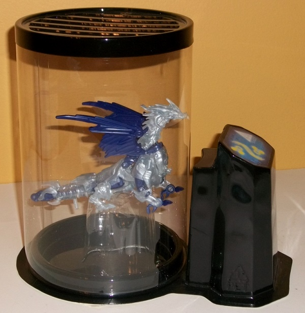
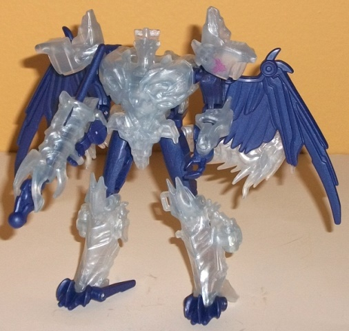
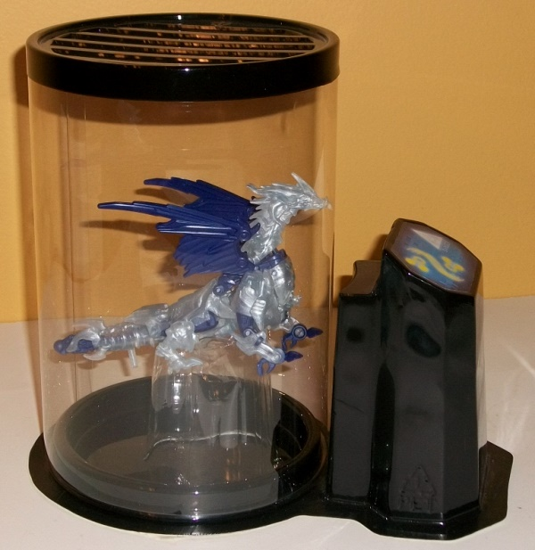
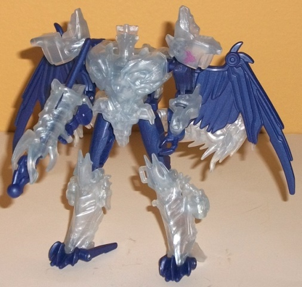
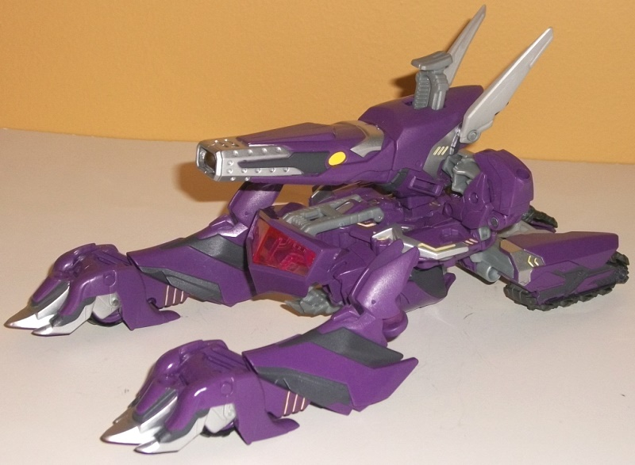
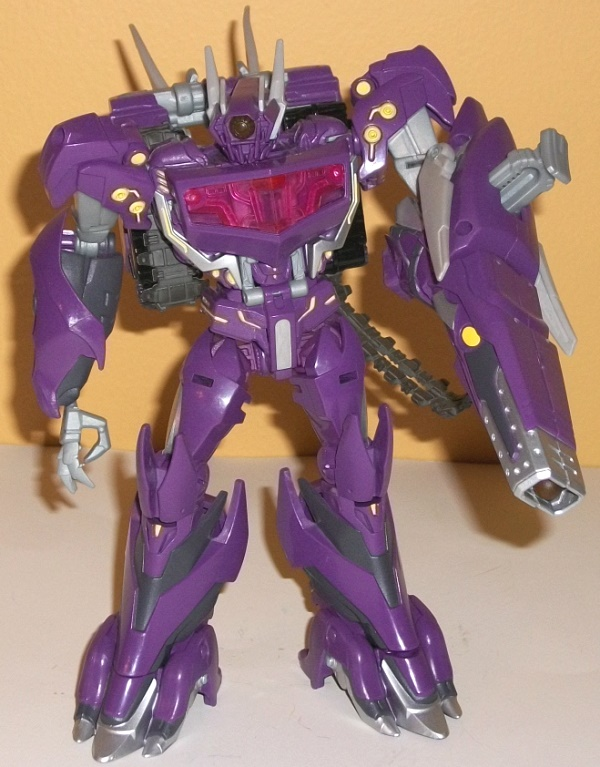

 
Allegiance: Predacon
Size : Commander
Difficulty of Transformation: Easy
Color Scheme : Cloudy transparent plastic and dark royal purple
Individual Rating: 7.2
Set Price : $50 (U.S.)
(NOTE: Because this set is composed of repaints,
this is not a full-blown review. This mainly covers any changes made to
the set and the color scheme, and merely compares it to the original versions
of these molds. For a review on the original Beast Hunters commander Predaking
toy, go
here
. For a review on the original
Beast Hunters voyager Shockwave toy, go
here
.)
 Predaking
Predaking


Allegiance:
Predacon
Size
: Commander
Difficulty of Transformation:
Easy
Color Scheme
: Cloudy transparent
plastic and dark royal purple
Individual Rating:
7.2
This version of Predaking
is meant to be an "embryonic" version of the character of sorts, still
in growth in Shockwave's lab-- hence why nearly all of his plastic is of
a cloudy, clear look, like it's still being developed. (That's also why
this is the Cyberverse-scaled version; he's not meant to be near his full
size.) He's not all clear, though-- the plastic he has that can't be transparent
because of the type it is has been colored a dark purple-- one that contrasts
quite well with the clear plastic, and that ties into the whole "Shockwave's
Lab" too what with purple being such a dominant color on Shockers. Except
for the Predacon symbol on his shoulder, however, Predaking has no paint
apps at all. Part of this is understandable because of the whole "embryonic"
thing going on, but a few paint apps like the eyes I still felt should
have been put on.
No mold changes have
been made to this version of Predaking.
Predaking also has--
exclusive to this set-- a "development chamber" couple of props. This whole
set comes in a box that looks like it's holding some sort of dangerous
experiment, but the "scene" inside when you open up the box has a rather
nifty Shockwave-scaled interface panel with a sticker with button-like
details (and a telling "DANGER!" icon on it). Meanwwhile, proto-Predaking
is suspended "in mid-air" by a clear plastic insert underneath the development
chamber, like he's floating in liquid. The transparent chamber can be taken
off at the bottom so you can get Predaking out of there to fiddle with
the figure itself, and the chamber pieces fit together quite snugly. That
said, the black and clear plastic used for this prop is quite flimsy, and
paint apps on it would've been appreciated.
 Shockwave
Shockwave


Allegiance
: Decepticon
Size
: Voyager
Difficulty of Transformation
: Medium
Color Scheme
: Moderately dark violet,
light milky semi-metallic gray, charcoal black, and some silver, light
yellow, and transparent cherry red
Individual Rating
: 7.2
Shockwave isn't so much
a "redeco" as a variant for this set. His shades have been changed slightly
to make him more closely resemble his G1 color scheme, but none of the
changes are huge. His main plastic color of purple has been made a little
lighter and a little more violet on this version, while a light milky gray
replaces a good deal of the charcoal black plastic on the mass-release
version of this mold. I'm generally not fond of milky light gray-- and
I still think the charcoal black looked better in those areas-- but it's
got a semi-metallic sheen to it on this toy that actually doesn't look
half bad. There still is a decent amount of charcoal black, but it's used
for his treads and some paint detailing this time around. The transparent
cherry red has been kept the same. What helps to elevate this version above
the mass-retail version-- at least in terms of color scheme-- are the increased
number of paint apps, which one can obviously afford to do on a more high-end
exclusive. There's more silver on the feet and on the sides of the robot
chest, while his gun barrel has a good mix of both charcoal black and silver,
along with some nice charcoal black detailing on his lower arms and lower
legs to boot. What really makes this color scheme "pop" a little are the
yellow paint apps on Shockwave's shoulders, knees, waist, the backside
of his lower legs, and a little on his gun-arm. The yellow really contrasts
excellently with all the other colors; I honestly wish it was used in a
few more places.
No mold changes have
been made to the core Shockwave toy, though sadly his Beast Hunters armor
has been left out (which is why this figure's rating is lower than than
the mass release's). For the semi-premium price, I really wish they would
have included it. I mean, it's optional-- it's not like you have to leave
it on the toy if you don't want to.
The SDCC 2013 "Shockwave's Lab" set is more for the huge Beast Hunters completist or semi-completist. Shockwave himself isn't much different from the mass release, with only a few extra paint apps and his Beast Hunter armor pieces left out of the set. The "proto-Predaking" idea is pretty solid, but if you want a definitive version of the character this mold in this color scheme is hardly going to do it for you. The "development chamber" piece is a nice extra touch, but not nearly worth the extra price considering how flimsy the plastic feels. Only recommended for big Beast Hunters fans who have the budget for things like convention exclusives; otherwise just get the mass retail versions of these toys.
Review by Beastbot